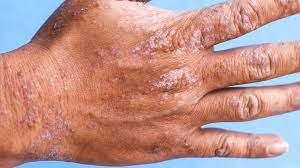

eczema
Harmfull and rare, consult a doctor
Eczema is a common skin condition that causes itchiness, rashes, dry patches, and infection. It's a type of dermatitis, which is a group of conditions that can inflame or irritate your skin. The most common type is atopic dermatitis or atopic eczema. “Atopic” means that you're more likely to get allergic conditions such as asthma and hay fever.
Most people can manage their symptoms by getting treatment and by avoiding irritants, things that can affect your skin when you come into contact with them. Extreme itchiness is the No. 1 overall symptom of eczema, and scratching that itch only makes it worse.
Over 31 million Americans have eczema. The periods of time when symptoms are at their worst are called "flare-ups." These can last for days or even weeks.
👉 who does eczema causes
 The first signs of eczema are itchiness, dry skin and a rash. These signs indicate that you came into contact with a trigger in your environment that caused your symptoms to start or flare up. Identifying environmental triggers and avoiding them can reduce your risk of an eczema flare-up in your future.
symptoms
Dry skin.
Itchy skin
Skin rash.
Bumps on your skin.
Thick, leathery patches of skin.
Flaky, scaly or crusty skin.
Swelling.An immune system response to something irritating
Problems in your skin’s barrier that let moisture out and germs in
A family history of other allergies or asthmaIn some people, atopic dermatitis is related to a gene variation that affects the skin's ability to provide protection. With a weak barrier function, the skin is less able to retain moisture and protect against bacteria, irritants, allergens and environmental factors — such as tobacco smoke.
In other people, atopic dermatitis is caused by too much of the bacteria Staphylococcus aureus on the skin. This displaces helpful bacteria and disrupts the skin's barrier function.
A weak skin barrier function might also trigger an immune system response that causes the inflamed skin and other symptoms.
Atopic dermatitis (eczema) is one of several types of dermatitis. Other common types are contact dermatitis and seborrheic dermatitis (dandruff). Dermatitis isn't contagious.
The first signs of eczema are itchiness, dry skin and a rash. These signs indicate that you came into contact with a trigger in your environment that caused your symptoms to start or flare up. Identifying environmental triggers and avoiding them can reduce your risk of an eczema flare-up in your future.
symptoms
Dry skin.
Itchy skin
Skin rash.
Bumps on your skin.
Thick, leathery patches of skin.
Flaky, scaly or crusty skin.
Swelling.An immune system response to something irritating
Problems in your skin’s barrier that let moisture out and germs in
A family history of other allergies or asthmaIn some people, atopic dermatitis is related to a gene variation that affects the skin's ability to provide protection. With a weak barrier function, the skin is less able to retain moisture and protect against bacteria, irritants, allergens and environmental factors — such as tobacco smoke.
In other people, atopic dermatitis is caused by too much of the bacteria Staphylococcus aureus on the skin. This displaces helpful bacteria and disrupts the skin's barrier function.
A weak skin barrier function might also trigger an immune system response that causes the inflamed skin and other symptoms.
Atopic dermatitis (eczema) is one of several types of dermatitis. Other common types are contact dermatitis and seborrheic dermatitis (dandruff). Dermatitis isn't contagious.